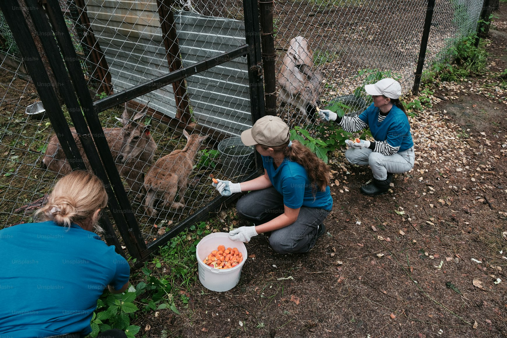

Zespół Szkół Centrum Kształcenia Rolniczego
im. Szczepana Pieniążka w Swornegaciach
Zespół Szkół Centrum Kształcenia Rolniczego
im. Szczepana Pieniążka w Swornegaciach
6 grudnia w internacie zrobiło się bardzo świątecznie 🎄. Mieszkańcy przygotowali wspólnie dekoracje, pierniczki i gorącą czekoladę, a wieczorem odwiedził nas… sam Mikołaj (z bardzo podejrzanie znajomym głosem 😉).
Były konkursy, quiz wiedzy o świętach oraz wręczanie symbolicznych upominków. Największą popularnością cieszyły się wspólne zdjęcia przy choince oraz „mikołajkowa poczta” z anonimowymi liścikami dla współlokatorów.

Pod koniec listopada Samorząd Uczniowski zorganizował szkolne Andrzejki. Na sali pojawił się kącik z wróżbami: lanie wosku, losowanie karteczek z zawodami, „imiona przyszłych współlokatorów” oraz koło fortuny z zadaniami.
Oprócz zabaw andrzejkowych była też muzyka, słodki bufet oraz kiermasz ciast, z którego dochód przeznaczono na dofinansowanie wyjazdu integracyjnego. Dziękujemy wszystkim klasom za zaangażowanie i pomoc w przygotowaniu imprezy!

Uczniowie kierunku technik weterynarii odwiedzili lokalne schronisko dla zwierząt. Celem wyjazdu było poznanie pracy opiekunów, warunków przebywania zwierząt oraz realnych potrzeb placówki.
W ramach akcji zbiórkowej udało się przekazać karmę, koce i środki higieniczne. Uczniowie pomagali także w spacerach z psami i porządkowaniu wybiegów. Wyjazd był nie tylko praktyczną lekcją zawodu, ale też solidną dawką empatii.